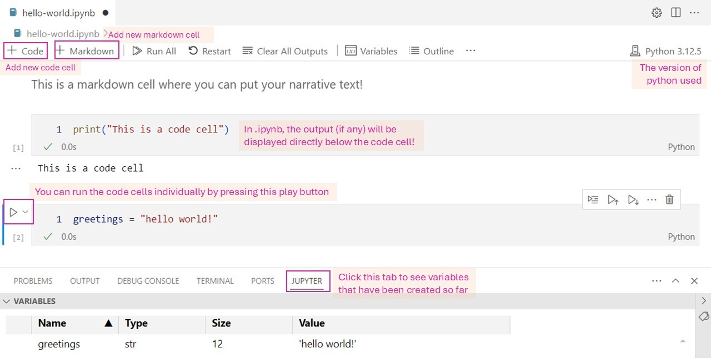
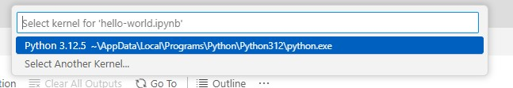
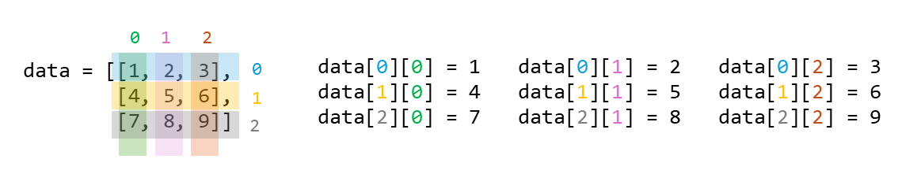
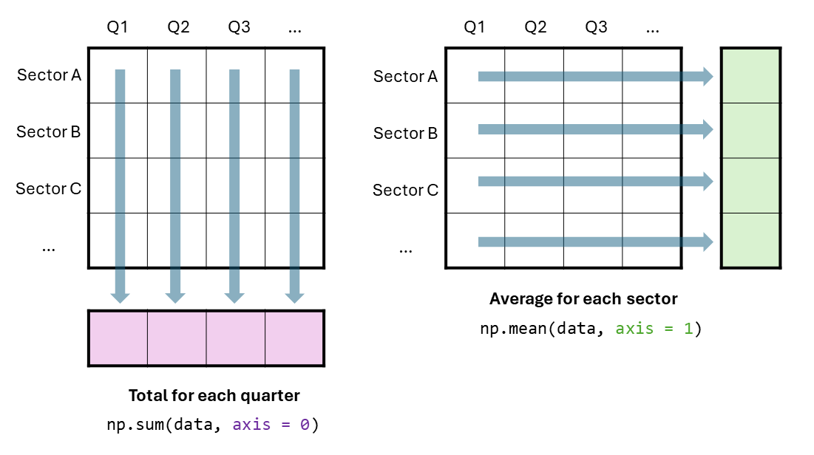
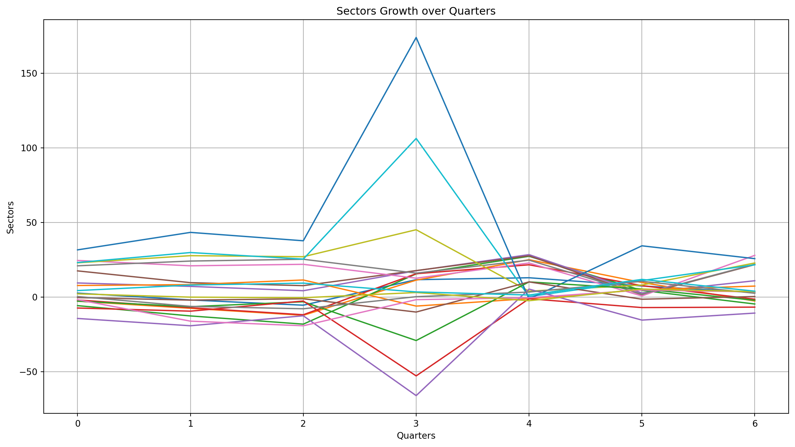
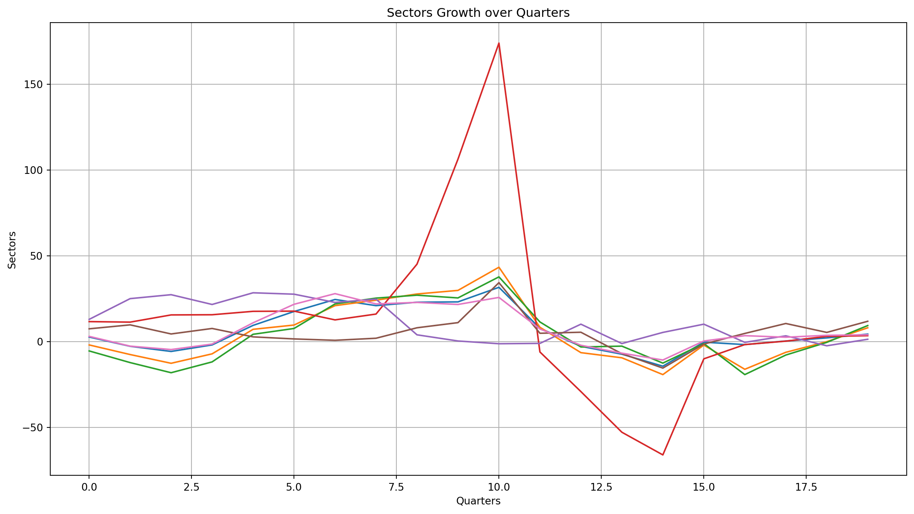
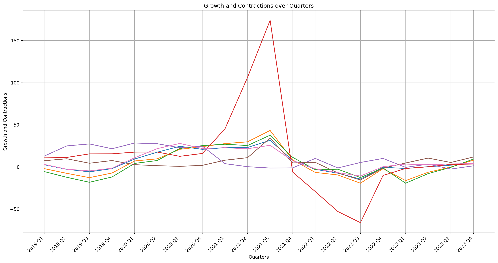
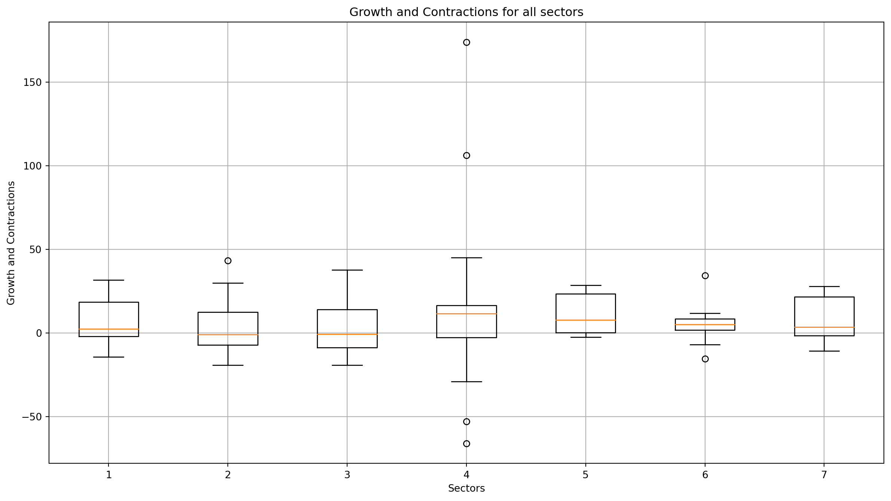
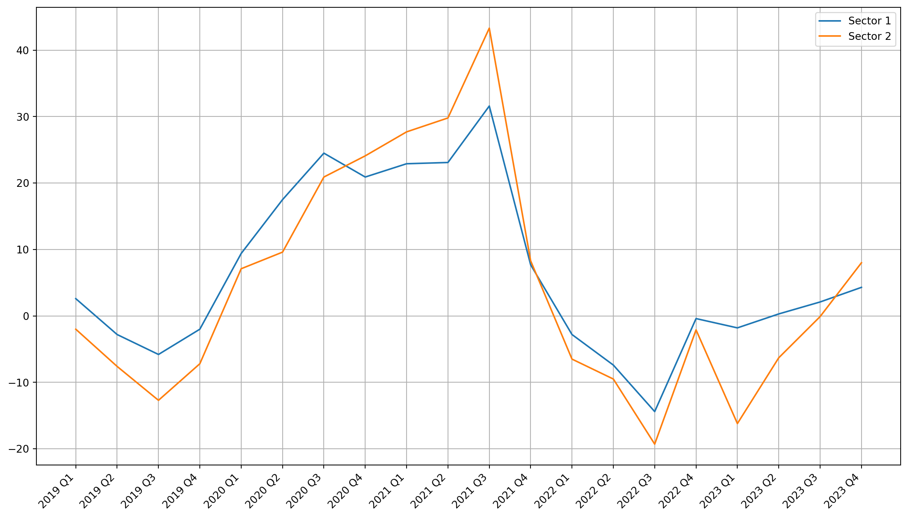

Introduction to Numpy & Matplotlib
Recap from yesterday
Introduction to Visual Studio
Introduction to Python
Handling Lists
Handling Loops and Conditionals
Overview for today
Introduction to Jupyter Notebook
Python libraries: Extending Python’s functionality
NumPy for more efficient numerical computing
Matplotlib: Data visualization
Section 1: Jupyter Notebook
Refresher: .py and .ipynb
If it’s a .py file…

For “production” uses e.g., creating apps, industrial deployments; Executing the file will run all the codes inside the file.
If it’s a .ipynb file…

Great for quick experiments or teaching / presentation; Codes will be executed on per-block basis
Creating new .ipynb file
- Make sure that you have Jupyter extension installed in VS Code
- Click on
File>New File...and thenJupyter Notebook. If you don’t see this option, most likely it means you don’t have the Jupyter extension installed
Jupyter Notebook quick tour
Jupyter notebook: running a code cell
When running a code cell for the first time, you will be prompted to choose the python kernel. Choose the version you want (in our case, version 3.12)
If you are prompted to install ipykernel, go ahead and install it.
Section 2: Numpy Arrays
What’s Numpy?
NumPy is the fundamental package for scientific computing in Python.
It is a Python library that provides a multidimensional array object, various derived objects (such as masked arrays and matrices), and an assortment of routines for fast operations on arrays, including mathematical, logical, shape manipulation, sorting, selecting, I/O, discrete Fourier transforms, basic linear algebra, basic statistical operations, random simulation and much more.1
Faster and more memory-efficient than Python lists
Optimized for large-scale numerical operations (better than list)
What’s a Python library?
- Python libraries or packages are essentially reusable sets of code that can be imported into your environment to extend functionality.
- Before using them, most libraries must first be installed and then imported. This is how you can install a library:
Library is installed, now what?
- After it is installed, we have to import them to “activate” it in our notebook so that we can use it!
- Note: some libraries are part of the Python Standard Library, meaning they are already installed and ready to be imported straight away! For example,
timelibrary.
To use a function that belongs to a library, we have to call the library name (or the nickname, if we assign one), followed by . and then the function name! e.g. if we want to call array function in numpy:
Numpy vs Lists
Lists
- dynamic size upon creation; you can change the size of a list anytime.
- all items inside list can be of different data types.
- not optimized for scientific/mathematical operations
NumPy Arrays
- fixed size upon creation; changing the size will create new array and delete the original.
- all items inside arrays must be the same data types.
- facilitate advanced mathematical and other types of operations on large numbers of data, and thus more efficient.
- a lot scientific/mathematical libraries are build on top of numpy (including pandas!)
Numpy vs Lists: Performance comparison
Imagine we have a million numbers to square. We’ll store them in both a list and an array, then compare their processing speeds.
Lists
Numpy vs Lists: Sum and products
- When you add two lists together, the contents will be concatenated
- When you do add two arrays together, the contents will be summed
Lists
Numpy creation and operations
we can use np.arange() to create an array from scratch. We can also create an array from a list using np.array()
np.arange creates evenly spaced values within a given interval:
Range array: [0. 0.5 1. 1.5 2. 2.5 3. 3.5 4. 4.5 5. 5.5 6. 6.5 7. 7.5 8. 8.5
9. 9.5]np.array will transform a list (denoted in square brackets) to array:
Numpy operations
Most operations we perform on lists can also be done with arrays, including:
- Slicing
- Indexing
- Sorting
- Creating copies or views (with important differences between them!)
Let’s try these! Also, you can refer to this handy Numpy cheat sheet by Datacamp
Indexing and Slicing
for indexing and slicing, it’s pretty much the same as list!
print("Original array:", range_array)
print("First element:", range_array[0])
print("Last element:", range_array[-1])
print("Slicing (elements 3 to 7):", range_array[2:7])
range_array[0] = 99
print("Update value of first element:", range_array[0])
print("Sorting array:", np.sort(range_array))Original array: [0. 0.5 1. 1.5 2. 2.5 3. 3.5 4. 4.5 5. 5.5 6. 6.5 7. 7.5 8. 8.5
9. 9.5]
First element: 0.0
Last element: 9.5
Slicing (elements 3 to 7): [1. 1.5 2. 2.5 3. ]
Update value of first element: 99.0
Sorting array: [ 0.5 1. 1.5 2. 2.5 3. 3.5 4. 4.5 5. 5.5 6. 6.5 7.
7.5 8. 8.5 9. 9.5 99. ]Copy vs Views
Let’s create 3 arrays:
Copy vs Views: in action
- Changes in original will be reflected in View and vice versa
- Changes in original will NOT be reflected in copy
original[0] = 99
print("\nAfter modifying the original array:")
print("Original array:", original)
print("View now:", view) # reflects the changes
print("Copy now:", copy) # remains unchanged
# Modify the view
view[1] = 100
print("\nAfter modifying the view:")
print("Original array:", original) # affected
print("View now:", view)
print("Copy now:", copy) # remains unchanged
# Modify the copy
copy[2] = 200
print("\nAfter modifying the copy:")
print("Original array:", original) # not affected
print("View now:", view) # not affected
print("Copy now:", copy)
After modifying the original array:
Original array: [99 2 3 4 5]
View now: [99 2 3 4 5]
Copy now: [1 2 3 4 5]
After modifying the view:
Original array: [ 99 100 3 4 5]
View now: [ 99 100 3 4 5]
Copy now: [1 2 3 4 5]
After modifying the copy:
Original array: [ 99 100 3 4 5]
View now: [ 99 100 3 4 5]
Copy now: [ 1 2 200 4 5]Learning Check #1
Create two arrays called odd_numbers and even_numbers that only contains odd numbers and even numbers from 1 to 20 respectively.
Section 3: 2-dimensional Arrays
Array can contain columns and rows too!
Indices in a 2D array
- Alternative way to “count” the indices is that we move from “outer” to “inner”.
- e.g. the value 4 is located inside the 2nd sub-list. and in this sub-list, it is located on the 1st index, hence
[1, 0](remember to minus 1, as indexing in python starts from 0)
Loading from a CSV into a 2D array
Let’s load our data sg-gdp.csv into a 2D array!
In this CSV:
- The rows represent 7 different sectors
- The columns represent the quarters from 2023 Q4, dating back all the way to 2019 Q1.
- Each cell contains the GDP growth of that sector for that quarter, compared to previous year’s quarters.
Remember, the shape will be printed as (row, column).
Loading from a CSV into a 2D array
GDP data
[[ 2.6 -2.8 -5.8 -2. 9.4 17.5 24.5 20.9 22.9 23.1 31.6 7.7
-2.8 -7.4 -14.4 -0.4 -1.8 0.3 2.1 4.3]
[ -2. -7.6 -12.7 -7.2 7.1 9.6 20.9 24.1 27.7 29.8 43.3 8.3
-6.5 -9.5 -19.3 -2.1 -16.2 -6.3 -0.1 8. ]
[ -5.5 -12.3 -18.2 -11.9 4.2 7.6 21.9 25.3 27. 25.4 37.7 11.4
-3.2 -2.7 -12.6 -1.2 -19.3 -7.9 -0.5 9.3]
[ 11.6 11.3 15.5 15.6 17.6 17.7 12.6 16. 45.1 106.3 174. -6.1
-29.2 -52.9 -66.1 -10.1 -1.8 0.2 3. 3.4]
[ 12.9 25. 27.3 21.6 28.4 27.6 22.8 24.7 3.9 0.3 -1.3 -1.1
10.1 -1.2 5.3 10.1 -0.5 3.3 -2.5 1.3]
[ 7.4 9.7 4.4 7.6 2.7 1.5 0.7 1.9 8. 11. 34.3 4.8
5.4 -7.1 -15.5 -1.5 4.7 10.5 5.3 11.8]
[ 3. -2.7 -4.7 -1.5 10.9 21.7 27.9 21.9 22.8 21.6 25.7 7.3
-2.2 -6.8 -10.8 0.3 3.4 2.5 3.6 3.9]]
GDP data shape: (7, 20)2D array operations
Let’s see if we can complete the following tasks:
- Find out the mean, standard deviation, max, and min values.
- Find the mean for each quarter (column-wise operation)
- Find the mean for each sector (row-wise operation)
- Transpose the array
- Retrieve all the negative values.
- Calculate the changes every quarter for Sector 1.
Task 1: Find out the mean, standard deviation, max, and mean values.
print("Mean of GDP data:", np.mean(gdp_data))
print("Standard deviation of GDP data:", np.std(gdp_data))
print("Maximum value in GDP data:", np.amax(gdp_data))
print("Minimum value in GDP data:", np.amin(gdp_data))Mean of GDP data: 7.504
Standard deviation of GDP data: inf
Maximum value in GDP data: 174.0
Minimum value in GDP data: -66.1Did you get inf result?
You may get inf result in one of your calculation. A possible cause is because when we create the array, we declared the data type (dtype) as float16. This means the array uses 16 bits (2 bytes) for each number, which translates to lower precision (only ~3 decimals), but lower memory usage and storage.
By default, numpy will use float64 data type which can gives us higher precision. Changing the dtype to float64 should fix this issue.
Axis Operations
Task 2 & 3: Find the mean for each quarter and each sector
print("Mean of each quarter:", np.mean(gdp_data, axis=0))
print("Mean of each sector:", np.mean(gdp_data, axis=1))Mean of each quarter: [ 4.285 2.943 0.827 3.172 11.47 14.74 18.77 19.27
22.48 31.08 49.34 4.613 -4.06 -12.516 -19.06 -0.7
-4.5 0.3716 1.558 6. ]
Mean of each sector: [ 6.477 4.465 3.725 14.18 10.9 5.38 7.39 ]Task 4: Transpose the array
Transposed GDP data shape: (20, 7)Alternatively, you can also do it this way:
[[ 2.6 -2. -5.5 11.6 12.9 7.4 3. ]
[ -2.8 -7.6 -12.3 11.3 25. 9.7 -2.7]
[ -5.8 -12.7 -18.2 15.5 27.3 4.4 -4.7]
[ -2. -7.2 -11.9 15.6 21.6 7.6 -1.5]
[ 9.4 7.1 4.2 17.6 28.4 2.7 10.9]
[ 17.5 9.6 7.6 17.7 27.6 1.5 21.7]
[ 24.5 20.9 21.9 12.6 22.8 0.7 27.9]
[ 20.9 24.1 25.3 16. 24.7 1.9 21.9]
[ 22.9 27.7 27. 45.1 3.9 8. 22.8]
[ 23.1 29.8 25.4 106.3 0.3 11. 21.6]
[ 31.6 43.3 37.7 174. -1.3 34.3 25.7]
[ 7.7 8.3 11.4 -6.1 -1.1 4.8 7.3]
[ -2.8 -6.5 -3.2 -29.2 10.1 5.4 -2.2]
[ -7.4 -9.5 -2.7 -52.9 -1.2 -7.1 -6.8]
[-14.4 -19.3 -12.6 -66.1 5.3 -15.5 -10.8]
[ -0.4 -2.1 -1.2 -10.1 10.1 -1.5 0.3]
[ -1.8 -16.2 -19.3 -1.8 -0.5 4.7 3.4]
[ 0.3 -6.3 -7.9 0.2 3.3 10.5 2.5]
[ 2.1 -0.1 -0.5 3. -2.5 5.3 3.6]
[ 4.3 8. 9.3 3.4 1.3 11.8 3.9]]Task 5: Retrieve all the negative values.
negative_growth = gdp_data < 0
print("negative growth array:", negative_growth)
print("use the above array to retrieve items whose position is TRUE:\n", gdp_data[negative_growth])negative growth array: [[False True True True False False False False False False False False
True True True True True False False False]
[ True True True True False False False False False False False False
True True True True True True True False]
[ True True True True False False False False False False False False
True True True True True True True False]
[False False False False False False False False False False False True
True True True True True False False False]
[False False False False False False False False False False True True
False True False False True False True False]
[False False False False False False False False False False False False
False True True True False False False False]
[False True True True False False False False False False False False
True True True False False False False False]]
use the above array to retrieve items whose position is TRUE:
[ -2.8 -5.8 -2. -2.8 -7.4 -14.4 -0.4 -1.8 -2. -7.6 -12.7 -7.2
-6.5 -9.5 -19.3 -2.1 -16.2 -6.3 -0.1 -5.5 -12.3 -18.2 -11.9 -3.2
-2.7 -12.6 -1.2 -19.3 -7.9 -0.5 -6.1 -29.2 -52.9 -66.1 -10.1 -1.8
-1.3 -1.1 -1.2 -0.5 -2.5 -7.1 -15.5 -1.5 -2.7 -4.7 -1.5 -2.2
-6.8 -10.8]Task 6: Calculate the changes every quarter for Sector 1.
The gdp_data is longitudinal, with each row representing observations for a specific sector over time. This makes growth and contraction trends meaningful to analyze. To calculate changes in the data using NumPy, we can use the numpy.diff() function, which computes the differences between successive values in an array.
sector1_array = gdp_data[0, :] # first row, all columns
print("sector1_array:", sector1_array)
sector1_changes = np.diff(sector1_array)
print("\nsector1_changes:", sector1_changes)sector1_array: [ 2.6 -2.8 -5.8 -2. 9.4 17.5 24.5 20.9 22.9 23.1 31.6 7.7
-2.8 -7.4 -14.4 -0.4 -1.8 0.3 2.1 4.3]
sector1_changes: [ -5.4 -3. 3.8 11.4 8.1 7. -3.594 2.
0.1875 8.5 -23.89 -10.5 -4.598 -7. 14. -1.4
2.1 1.8 2.201 ]Numpy Financial
The numpy-financial package is a collection of elementary financial functions. It’s a relatively tiny package, but useful if you need to do some financial calculations.
Check out the full documentation here!
Install numpy financial
Import it to your notebook to “toggle it on”
Calculating future value
Calculate the future value of $1000 invested for 3 years at a 5.0% average annual rate of return.
By convention, the negative sign represents cash flow out (i.e. money not available today).
Calculatine number of payment period
You have a loan of 10,000 SGD at 9% annual interest. How long would it take to pay-off the load if your monthly payment is at 750?
Learning Check #2
- Calculate the changes for each quarter for all sector. Save this into an array called
sector_changes. - Afterwards, find the largest changes in
sector_changes.
Learning Check #2
sector_changes: [[ -5.4 -3. 3.8 11.4 8.1 7.
-3.594 2. 0.1875 8.5 -23.89 -10.5
-4.598 -7. 14. -1.4 2.1 1.8
2.201 ]
[ -5.6 -5.1 5.504 14.3 2.5 11.305
3.188 3.61 2.094 13.516 -35. -14.8
-3. -9.8 17.2 -14.1 9.91 6.2
8.1 ]
[ -6.797 -5.906 6.305 16.1 3.402 14.305
3.39 1.703 -1.594 12.28 -26.28 -14.59
0.5 -9.91 11.4 -18.1 11.4 7.4
9.8 ]
[ -0.3047 4.203 0.10156 1.992 0.1094 -5.1
3.398 29.1 61.22 67.7 -180.1 -23.1
-23.7 -13.22 56.03 8.305 2. 2.8
0.4004 ]
[ 12.1 2.297 -5.703 6.812 -0.8125 -4.797
1.906 -20.8 -3.6 -1.6 0.2002 11.2
-11.305 6.5 4.8 -10.6 3.8 -5.8
3.8 ]
[ 2.305 -5.305 3.203 -4.902 -1.199 -0.8
1.2 6.1 3. 23.31 -29.52 0.5977
-12.5 -8.4 14. 6.2 5.8 -5.2
6.496 ]
[ -5.7 -2. 3.2 12.4 10.805 6.203
-6. 0.8906 -1.203 4.11 -18.4 -9.5
-4.6 -3.996 11.09 3.1 -0.9004 1.1
0.3008 ]]
sector_changes shape: (7, 19)
Largest change: 67.7Section 4: Visualizing Array contents
Visualization libraries: Matplotlib and Seaborn
There are multiple visualization libraries for python. We will try out Matplotlib and Seaborn (for next session)
Primary differences between the two:
Matplotlib
- A foundational Python library for static, interactive, and animated visualizations.
- Highly customizable, offering full control over plot elements (axes, ticks, legends).
- Supports a wide range of plots, from simple line charts to complex 3D visualizations and heatmaps.
- Can be challenging for beginners due to its flexibility.
- Ideal for precise control and building complex plots.
Seaborn
- Built on Matplotlib to simplify statistical visualization with attractive designs.
- Offers high-level abstractions for complex plots (e.g., pair plots, heatmaps) with minimal effort.
- Supports visualizing variable relationships and statistical summaries (e.g., regression, categorical plots).
- Easier for beginners to create high-quality visuals quickly.
- Best for data exploration and statistical analysis with minimal setup.
Refresher: Data types in social sciences and economics research
Non-Continuous Data
- Nominal/Categorical: Non-ordered, non-numerical data, used to represent qualitative attribute.
- Ordinal: Ordered non-numerical data.
- Discrete: Numerical data that can only take specific value (usually integers)
- Binary: Nominal data with only two possible outcome.
Continuous Data
- Interval: Numerical data that can take any value within a range. It does not have a “true zero”.
- Ratio: Numerical data that can take any value within a range. it has a “true zero”.
Chart types and their purposes
- Bar charts: Comparing categories
- Line charts: Trends or progress over time
- Scatter plots: Relationships between (continuous) variables
- Pie charts: Parts of a whole
- Depending on who you ask, some may argue that percent barchart is better at this.
- Box plots: Distribution and outliers
Anatomy of a matplotlib graph

Useful resources:
- Matplotlib cheatsheets - This is more beginner-friendly
- Quick start guide
- Python Graph Gallery
Matplotlib: Getting started
As with the other libraries, let’s install the library and then import it.
Import the library and give it a nickname called plt.
Matplotlib: Simple Lineplot
Let’s visualize the content of gdp_data.
Matplotlib: Simple Lineplot

Something not quite right…
- It seems like it’s trying to plot the differences between sectors instead of growth over each sectors.
- This is because of the way our data is structured: rows representing sectors and columns representing quarters. The rows info is passed to the X coord and the columns are passed to Y coord.
- We can fix this by transposing the table, so that the rows represent quarters and columns represent sectors.
Something not quite right…
[[ 2.6 -2. -5.5 11.6 12.9 7.4 3. ]
[ -2.8 -7.6 -12.3 11.3 25. 9.7 -2.7]
[ -5.8 -12.7 -18.2 15.5 27.3 4.4 -4.7]
[ -2. -7.2 -11.9 15.6 21.6 7.6 -1.5]
[ 9.4 7.1 4.2 17.6 28.4 2.7 10.9]
[ 17.5 9.6 7.6 17.7 27.6 1.5 21.7]
[ 24.5 20.9 21.9 12.6 22.8 0.7 27.9]
[ 20.9 24.1 25.3 16. 24.7 1.9 21.9]
[ 22.9 27.7 27. 45.1 3.9 8. 22.8]
[ 23.1 29.8 25.4 106.3 0.3 11. 21.6]
[ 31.6 43.3 37.7 174. -1.3 34.3 25.7]
[ 7.7 8.3 11.4 -6.1 -1.1 4.8 7.3]
[ -2.8 -6.5 -3.2 -29.2 10.1 5.4 -2.2]
[ -7.4 -9.5 -2.7 -52.9 -1.2 -7.1 -6.8]
[-14.4 -19.3 -12.6 -66.1 5.3 -15.5 -10.8]
[ -0.4 -2.1 -1.2 -10.1 10.1 -1.5 0.3]
[ -1.8 -16.2 -19.3 -1.8 -0.5 4.7 3.4]
[ 0.3 -6.3 -7.9 0.2 3.3 10.5 2.5]
[ 2.1 -0.1 -0.5 3. -2.5 5.3 3.6]
[ 4.3 8. 9.3 3.4 1.3 11.8 3.9]]Visualize the transposed data
Same code, but this time we pass in the transposed data.
Visualize the transposed data

Fixing the X-axis labels
It is still not very readable, so let’s give it proper x-axis labeling!
quarters = ['2019 Q1', '2019 Q2', '2019 Q3', '2019 Q4', '2020 Q1', '2020 Q2', '2020 Q3',
'2020 Q4', '2021 Q1', '2021 Q2', '2021 Q3', '2021 Q4', '2022 Q1', '2022 Q2', '2022 Q3',
1'2022 Q4', '2023 Q1', '2023 Q2', '2023 Q3', '2023 Q4']
2plt.plot(transposed)
3plt.xticks(ticks=range(len(quarters)),
labels=quarters,
rotation=45,
ha="right")
plt.xlabel('Quarters')
plt.ylabel('Growth and Contractions')
plt.title('Growth and Contractions over Quarters')
4plt.tight_layout()
plt.grid()
plt.show() - 1
- Create a list of labels that we want to put
- 2
- Still using the transposed array
- 3
- Set the labels. In this lines of code, we tell matplotlib how many labels are there, what are the labels, the rotation of the labels, and the horizontal align.
- 4
- This will get rid of the extra margins on the sides
Fixing the X-axis labels

Adding individual labels
We can utilize the for loop to add plot the lines and label them one by one.
1for sector_num in range(7):
5 print("plotting sector_num:", sector_num)
2 plt.plot(transposed[:, sector_num],
3 label="Sector " + str(sector_num))
4plt.legend()
plt.xticks(ticks=range(len(quarters)), labels=quarters, rotation=45, ha="right")
plt.tight_layout()
plt.grid()
plt.show() - 1
-
Here, we set the loop to run 7 times since we have seven sector. Throughout the loop,
sector_numvalue will change from 0 to 6 - 2
- Putting this here so that we know when a sector is being plotted.
- 3
-
Plot the current sector.
[:, sector_num]can be read as “all rows, in thesector_numcolumn” - 4
- label each line plot with the sector number.
- 5
- Toggle the legend so that all the labels are visible .
Adding individual labels
plotting sector_num: 0
plotting sector_num: 1
plotting sector_num: 2
plotting sector_num: 3
plotting sector_num: 4
plotting sector_num: 5
plotting sector_num: 6
Matplotlib: Histogram
Let’s see if there’s any outlier growths or contractions on each sectors over the quarters! Histogram is the best visualization for this purpose.
Matplotlib: Histogram

Learning Check #3
Using the sg-gdp.csv data loaded into a NumPy array:
- Create a line plot showing the GDP growth over time for the first two sectors only
- Add appropriate labels, a title, and a legend to the plot.
Code
two_sectors = gdp_data[:2, :] #[first two rows, all columns]
sector_number = 1
quarters = ['2019 Q1', '2019 Q2', '2019 Q3', '2019 Q4', '2020 Q1', '2020 Q2', '2020 Q3',
'2020 Q4', '2021 Q1', '2021 Q2', '2021 Q3', '2021 Q4', '2022 Q1', '2022 Q2', '2022 Q3',
'2022 Q4', '2023 Q1', '2023 Q2', '2023 Q3', '2023 Q4']
for sector in two_sectors:
plt.plot(sector, label = "Sector " + str(sector_number))
sector_number = sector_number + 1 #increase sector number by 1
plt.xticks(ticks=range(len(quarters)), labels=quarters, rotation=45, ha="right")
plt.legend()
plt.grid()
plt.show()Learning Check #3

End of Session 2!
We have covered: jupyter notebook, numpy, and matplotlib!